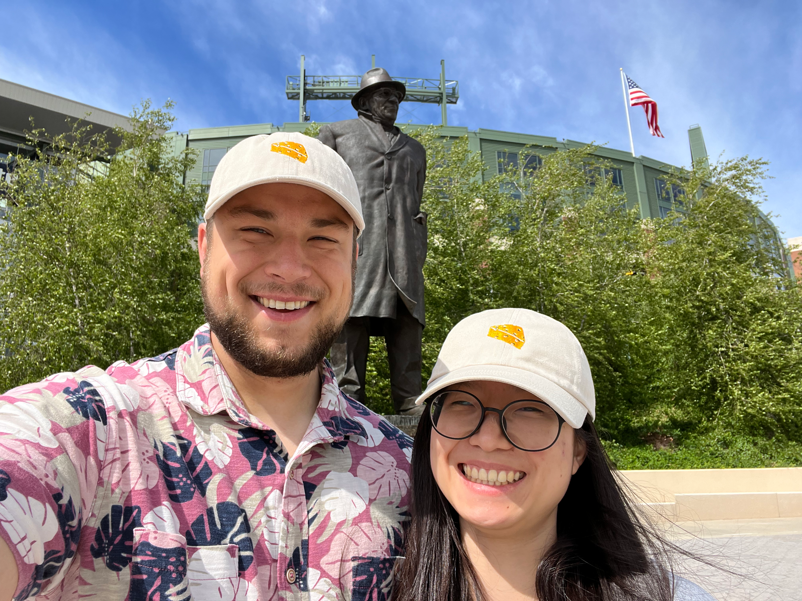

Biography
I am currently a Senior Economist at MITRE. Previously, I was a Postdoctoral Researcher at the Swedish University of Agricultural Sciences, having earned my PhD from Iowa State University in August 2024. My doctoral training disciplined my thinking, sharpened my empirical skills, and developed my ability to design and execute ambitious research projects. I hold an undergraduate degree from the University of Wisconsin–Eau Claire, completed in 2019.
Throughout my academic journey, I've been deeply inspired by service, undergraduate research, and teaching—roles I've embraced both as a contributor and a mentor. In my personal life, I am committed to strength training, a pursuit that mirrors my professional life in its demand for discipline and dedication.
Academic Journey
Senior Economist
MITRE
Applying economic analysis and empirical methods to problems in the public interest at MITRE in McLean, Virginia.
Postdoctoral Researcher
Swedish University of Agricultural Sciences
Working in the Environmental Economics group on the project "Scrap and Grab: Should Sweden introduce a vehicle scrappage subsidy?" Conducting research on the environmental and economic impacts of vehicle scrappage programs.
Ph.D. in Economics
Iowa State University
My doctoral training provided a strong foundation in economic theory, empirical methods, and research design. Specialized in Industrial Organization with applications in Transportation and Labor Economics.
B.A. in Economics and Mathematics
University of Wisconsin–Eau Claire
Dual degree combining rigorous mathematical training with economic theory and applications. Participated in undergraduate research initiatives and developed foundational skills in data analysis and economic modeling.
Beyond Economics
I am happily married to Shinyoung Kim. Her academic website can be found: Here

Beyond my academic pursuits, I am committed to physical fitness and strength training. My current personal records for the main powerlifting movements are:
Squat
415lb / 188.2kg
Bench Press
305lb / 138.3kg
Deadlift
500lb / 226.8kg
I find that the discipline and dedication required for strength training complement my approach to research and academic work. Both domains require consistent effort, methodical progress, and a willingness to push beyond comfort zones to achieve meaningful results.
When not in the gym or engaged in research, I enjoy long walks in nature, which provide valuable time for reflection.
Levi Soborowicz
Senior Economist
MITRE
7515 Colshire Drive
McLean, VA 22102